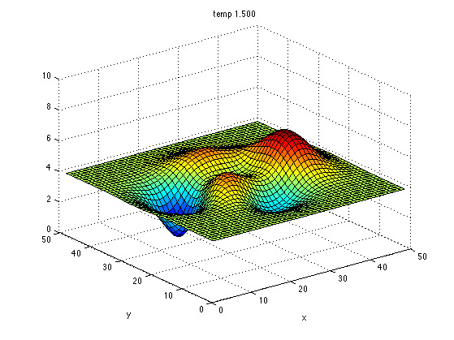
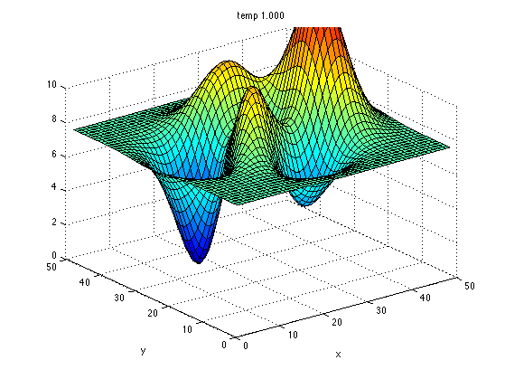
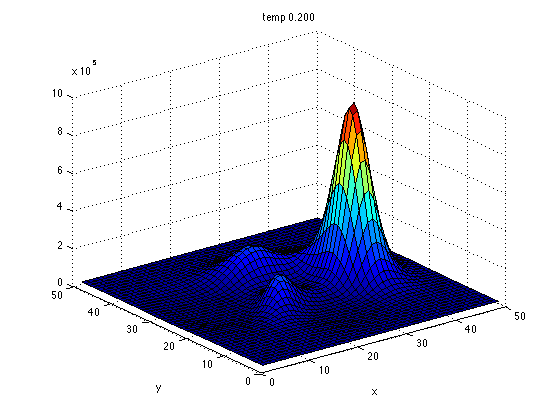
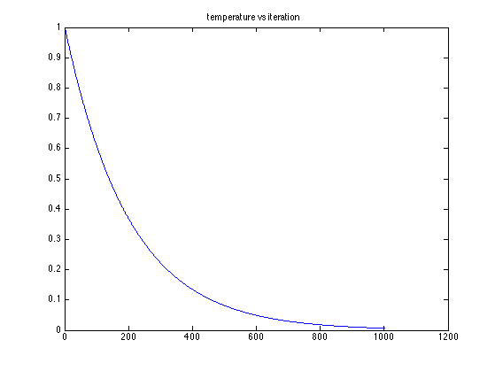
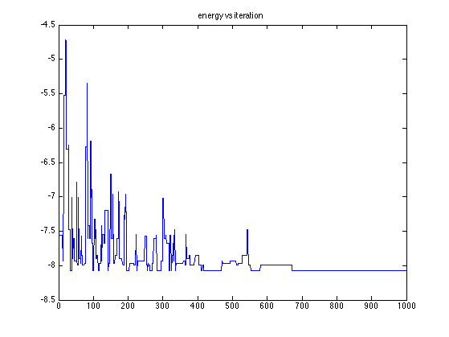
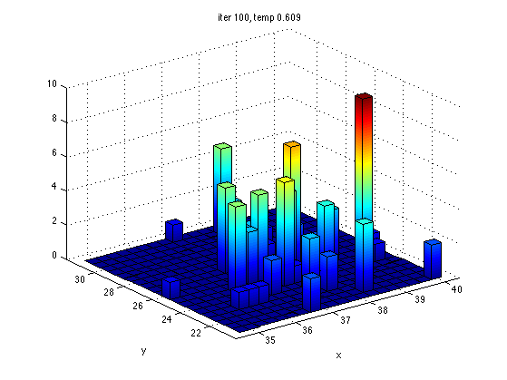
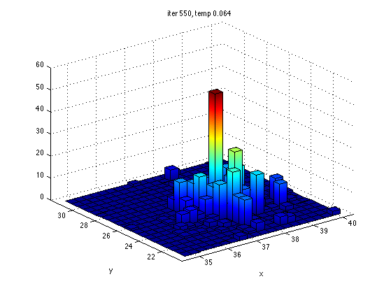
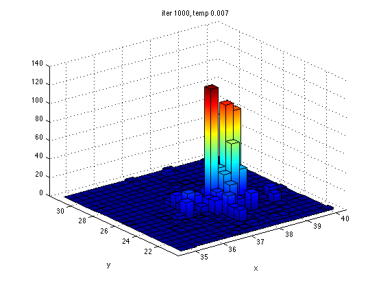

Demo of Simulated Annealing
for finding the most probable point of a peaky 2D surface
%PMTKneedsStatsToolbox hist3
% This file is from pmtk3.googlecode.com function saDemoPeaks()
requireStatsToolbox findMAX = true; [XX, YY]=meshgrid(1:49,1:49); Z = peaks; % 49x49 surface surface m = min(Z(:)); Zpos = Z+abs(m)+1; % Plot the surface at different temperatures %temps = [0.3]; temps = [1.5, 1, 0.2]; %fig1 = figure; fig2= figure; for ti=1:length(temps) t = temps(ti); Zt = Zpos.^(1/t); %figure(fig1); subplot(2,2,ti) figure; %surf(XX,YY,Zt); title(sprintf('temp %5.3f', t)); surf(YY,XX,Zt); title(sprintf('temp %5.3f', t)); xlabel('x'); ylabel('y') if t>=1 set(gca,'zlim',[0 10]); end %figure(fig2); subplot(2,2,ti); printPmtkFigure(sprintf('SApeaksSurf%d', ti)); if 0 figure; imagesc(Zt); axis xy; colorbar; title(sprintf('temp %5.3f', t)); printPmtkFigure(sprintf('SApeaksSurfImagesc%d', ti)); end end % find optimum by exhaustive search M = max(Z(:)); % 8.0752 [row,col] = find(Z==M); % max row 38, col 25 fprintf('max =%5.3f at r=%d,c=%d\n', M, row, col); M = min(Z(:)); % -6.54566 [row,col] = find(Z==M); % min row 12, col 27 fprintf('min =%5.3f at r=%d,c=%d\n', M, row, col); if findMAX setSeed(2); xinit = [35,25]; M = max(Z(:)); % 8.0752 [row,col] = find(Z==M); %figure(1); hold on; h=plot(row,col,'ro');set(h,'markersize',15); else setSeed(1); xinit = [25,25]; % initial state is in middle of grid end Sigma_prop = 2^2 * eye(2); %2^2 = variance Nsamples = 1000; opts = struct(... 'proposal', @(x) (x+(gaussSample(zeros(2,1), Sigma_prop, 1))), ... 'maxIter', Nsamples, ... 'minIter', Nsamples, ... 'temp', @(T,iter) (0.995*T), ... 'verbose', 0); [xopt, fval, samples, energies, acceptRate, temp] = ... simAnneal(@target, xinit, opts); xopt fval figure; plot(temp); title('temperature vs iteration'); printPmtkFigure('SApeaksTemp'); figure; plot(energies); title('energy vs iteration') printPmtkFigure('SApeaksEnergy'); % plot the histogram of samples N_bins = 20; % otherwise the image file gets too large Nsamples = size(samples, 1); Ns = round(linspace(100, Nsamples, 3)); %fig1 = figure; fig2 = figure; for i=1:length(Ns) T = Ns(i); %figure(fig1) %subplot(2,2,i) figure; hist3(samples(1:T,:), [N_bins N_bins], 'FaceAlpha', 0.65); xlabel('x'); ylabel('y') title(sprintf('iter %d, temp %5.3f', T, temp(T))); %view(-37,34); set(get(gca, 'child'), 'FaceColor', 'interp', 'CDataMode', 'auto'); printPmtkFigure(sprintf('SApeaksSamples%d', i)); if 0 %figure(fig2); subplot(2,2,i); figure; hh= hist3(samples(1:T,:), [N_bins N_bins]); imagesc(hh'); axis xy; colorbar; title(sprintf('iter %d, temp %5.3f', T, temp(T))); set(get(gca, 'child'), 'FaceColor', 'interp', 'CDataMode', 'auto'); printPmtkFigure(sprintf('SApeaksImagesc%d', i)); end end %{ figure; surf(XX,YY,Z); xlabel('x');ylabel('y') title('energy function') %}
max =8.075 at r=38,c=25 min =-6.547 at r=12,c=27 xopt = 37.6690 24.6061 fval = -8.0752       
function p = target2(xy) x = xy(1); y = xy(2); p = 3*(1-x).^2.*exp(-(x.^2) - (y+1).^2) ... - 10*(x/5 - x.^3 - y.^5).*exp(-x.^2-y.^2) ... - 1/3*exp(-(x+1).^2 - y.^2); if findMAX, p = -p; end end
function p = target(x) if findMAX Z = -peaks; else Z = peaks; end r = round(x(1)); c = round(x(2)); if r >= 1 & r <= size(Z,1) & c >= 1 & c <= size(Z,2) p = Z(r,c); else p = inf; % invalid end end
end